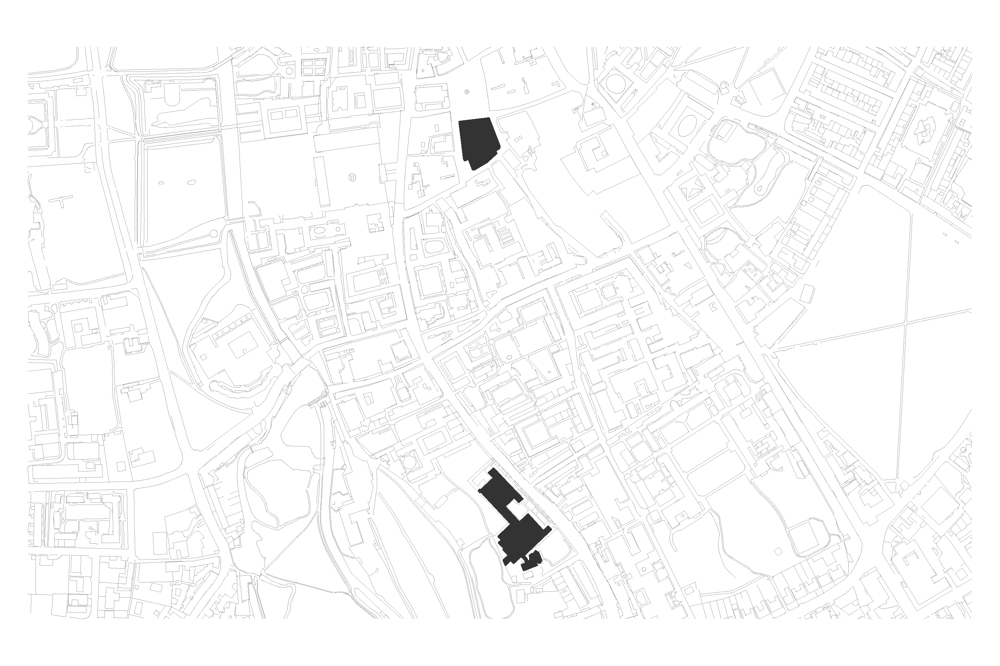
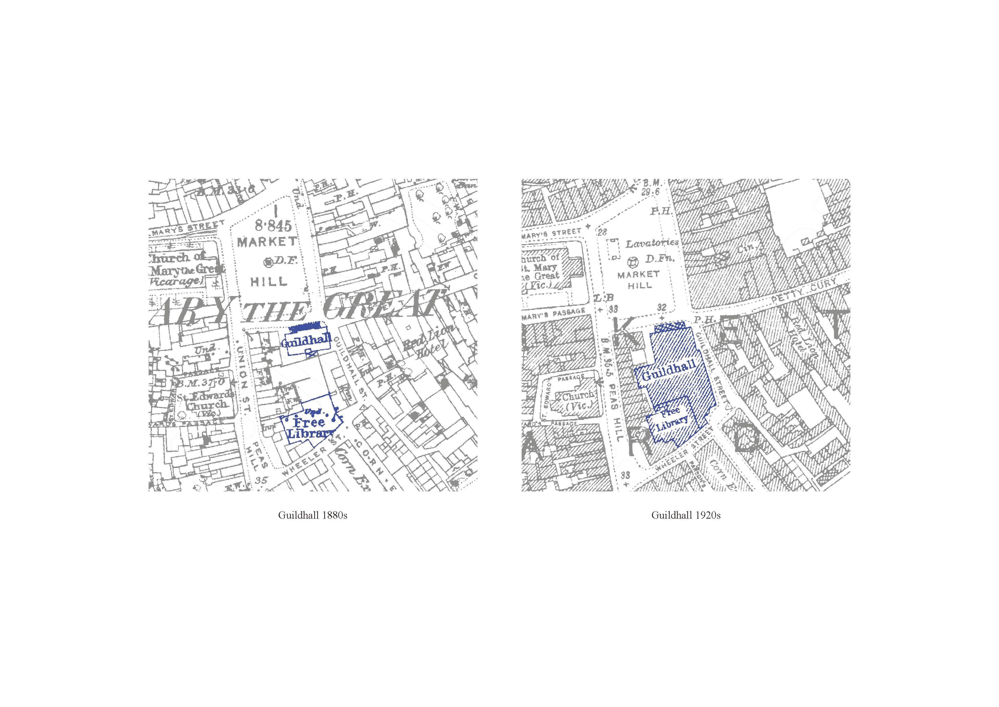
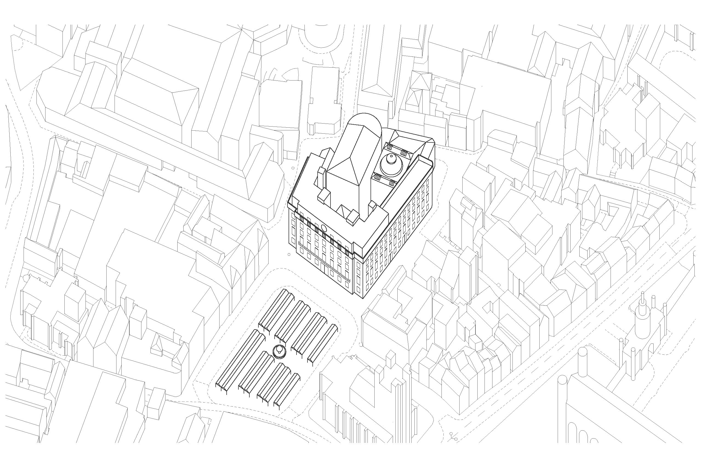


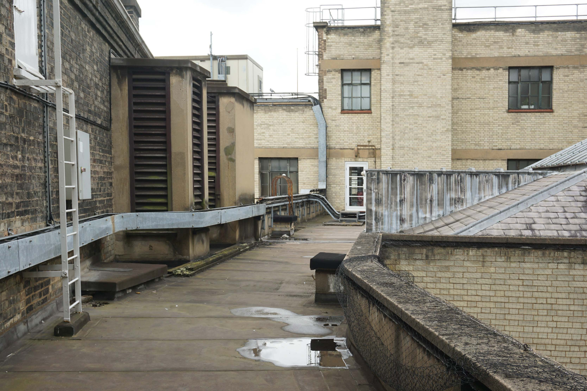

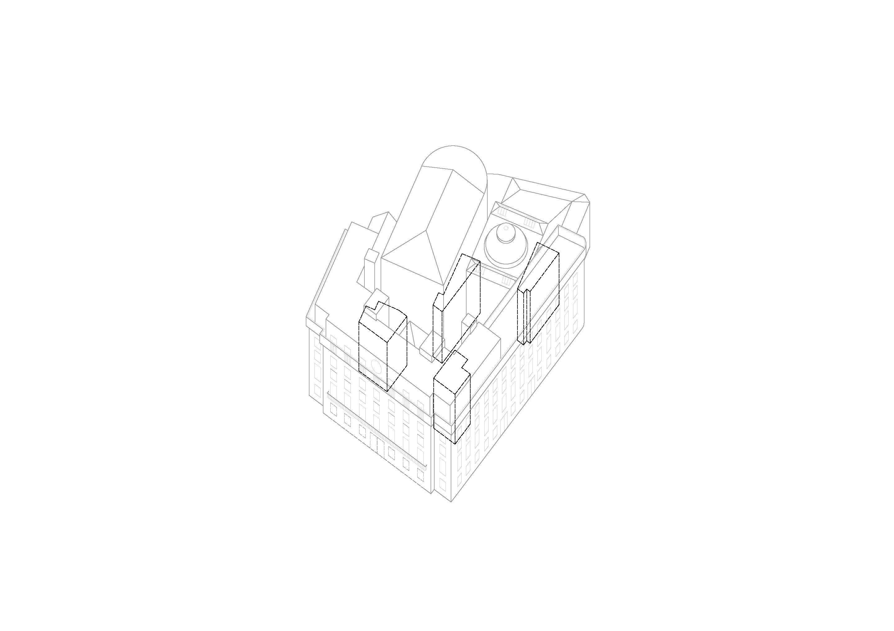
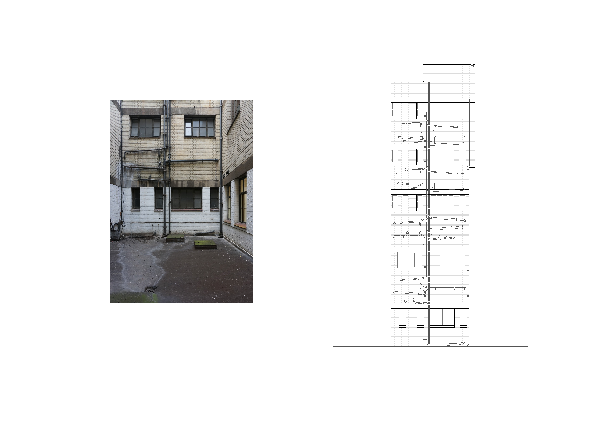
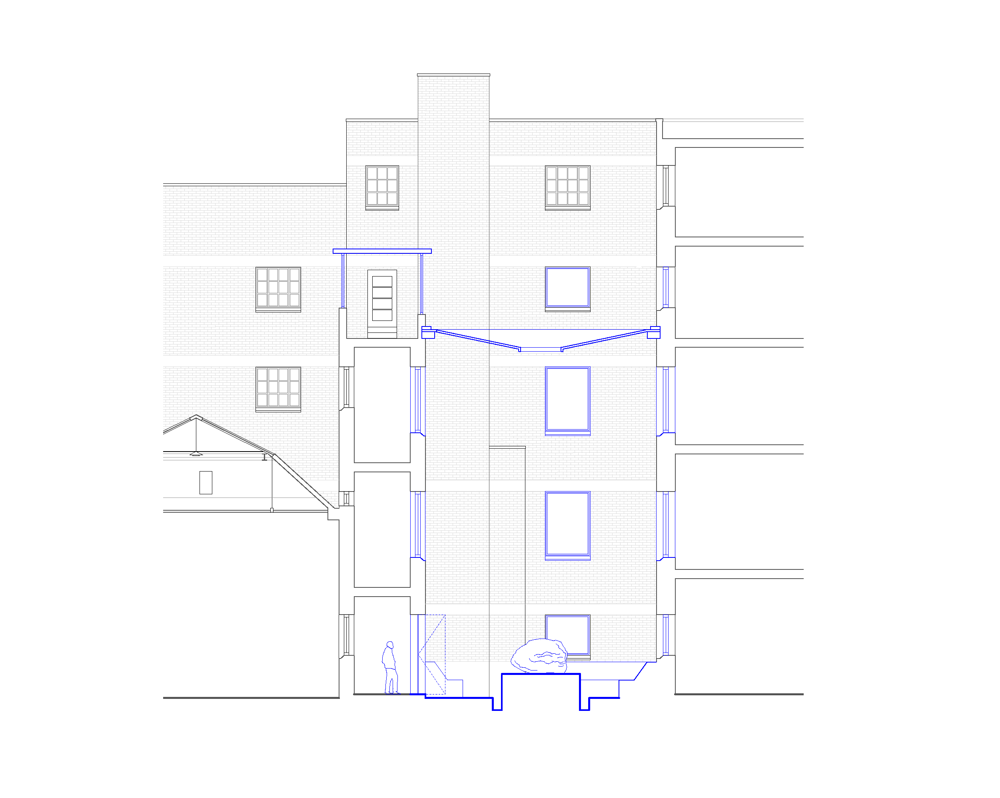
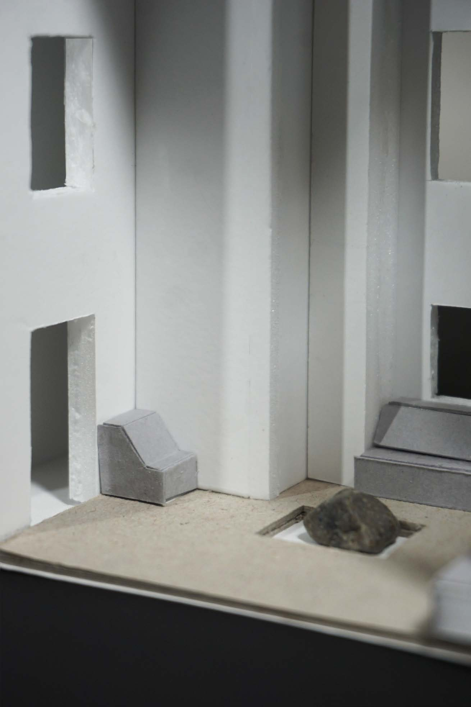
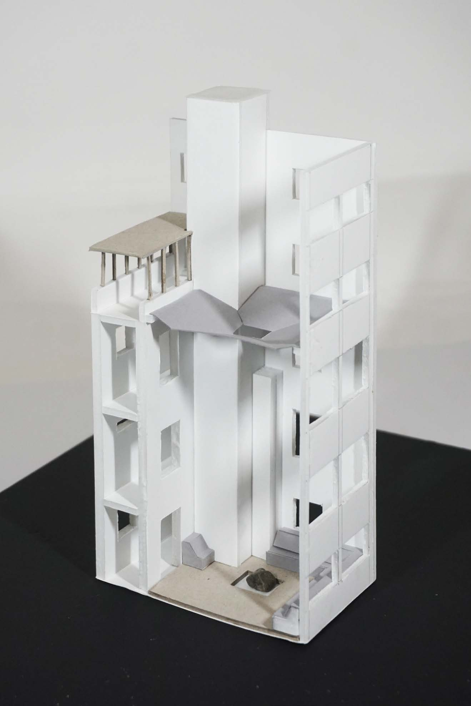
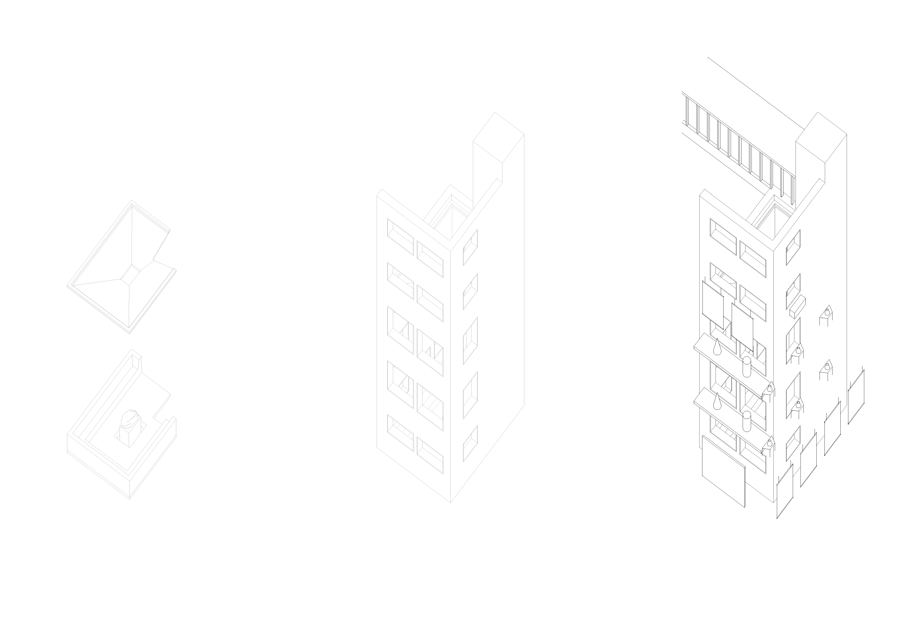
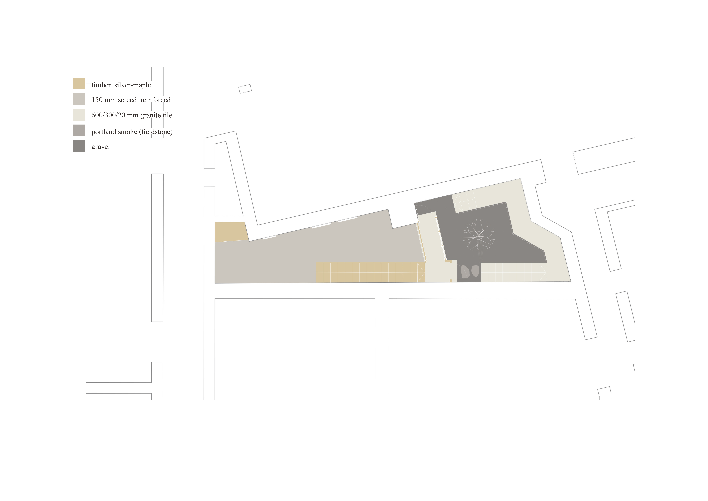


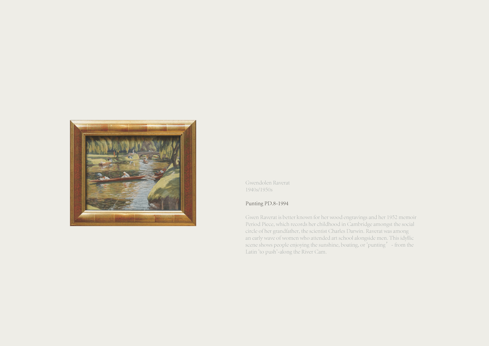
剑桥市民博物馆：市政厅的公共性再造
项目"剑桥市民博物馆"围绕"空间即展品"的理念展开，将视线从菲茨威廉博物馆的馆藏内部转向剑桥市政厅这一城市公共建筑本身。项目试图回答一个根本性的问题：一座城市的博物馆，是否必须被限定在特定的建筑边界之内？设计以"重新分配博物馆"为策略，将市政厅改造为一座向所有市民敞开的城市展馆，让剑桥的历史与当下在城市的日常脉搏中交汇。
设计的起点是对市政厅与市集广场之间关系的重新审视。这座建筑占据了广场一侧的显著位置，但其厚重的立面与封闭的底层界面却将自身与城市的公共生活割裂开来。项目提出将市政厅的底层立面打开，以连续的玻璃界面替代原有的实墙，在建筑与广场之间建立起直接而透明的视觉连接。市民得以从广场望见建筑内部的展览活动，参观者也得以在展厅内回望广场上往来的人流——建筑不再是一座孤立的纪念物，而成为城市公共生活的取景框。
设计的中枢是一系列围绕采光井展开的空间干预。现有的采光井原本只是建筑内部被遗忘的垂直空隙，项目却将其转化为整个体验的核心锚点。雨水，这座以"剑桥"为名的城市最日常的自然元素被引入采光井之中，经由当地石材的层层跌水，形成一座时间的瀑布亭。滴落的水流在静谧的砖井中回响，将看不见的时间转化为可感知的声音与触觉。围绕采光井的走廊被改造为环形展厅，展品悬置于玻璃窗的另一侧，观众在行走中得以从不同高度、不同角度与艺术品相遇。空间的深度，由此转化为观看的景深。
在底层，设计开辟了一处"雨水画廊"，将室外的自然元素引入室内。玻璃天窗将变幻的天光投射在展厅地面上，雨滴敲击玻璃的声音成为空间持续的配乐。沿墙设置的凹龛为参观者提供了可退避的休憩角落。从亲密的独处到偶然的交谈，空间的尺度在开放与包裹之间自如切换。延续此前学期对触觉体验的研究，新设计的扶手在延续触觉导览功能的同时，加入了模仿水流形态的肌理，让视障参观者通过指尖感受这座城市的雨与河。
项目的深层野心在于重新定义"博物馆"的边界。附录中记录的剑桥藏品，从中世纪的陶罐到玛格达琳·奥顿多的当代陶艺，从克拉拉·克林霍夫笔下的肖像到格温多伦·拉弗拉特描绘的剑河撑篙，并非被迁入市政厅，而是通过一幅幅新绘制的"剑桥藏品地图"，提示着整座城市本身就是一座没有围墙的博物馆。从菲茨威廉博物馆到凯特尔庭院，从基督学院的纪念碑到市集广场的日常喧嚷，每一处地点都是一件展品，每一次行走都是一次观展。"剑桥市民博物馆"最终呈现的是一种新的目光。它邀请市民与访客重新看见市政厅——不是作为权力的象征或历史的遗存，而是作为日常生活的容器、公共交往的场所、感官体验的现场。